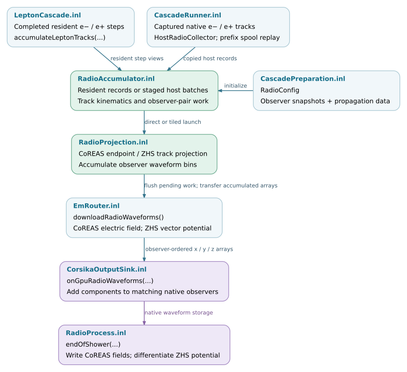

Radio calculation
Radio calculation converts completed charged-particle tracks into signals at specified observer positions. Transport determines the tracks; the radio implementation applies an emission formalism and propagation model, then accumulates the contributions in the observer’s time or frequency grid.
This chapter follows the inputs, numerical execution and output interfaces. Particle transport is described in Transport and interaction kernels; event routing and multi-process coordination are described in Execution and scheduling.
Note
Source baseline: d5297c43. The ordinary atmosphere/homogeneous-medium accumulator and the firn radio implementations have distinct propagation and output contracts. Selecting a Kokkos execution space does not select a propagation model or establish its suitability for a particular environment.
Component responsibilities
Component |
Input |
Responsibility and output |
|---|---|---|
Configuration builders |
C8 environment or optical model, observers and enabled algorithms. |
Numerical propagation parameters and observer snapshots. No track projection occurs during this conversion. |
Track adapters |
Completed resident steps or native C8 track segments. |
Endpoint records in compatible units and coordinates, collected once for the requested radio algorithms. |
Projection kernels |
Track kinematics, observers and propagation data. |
CoREAS endpoint contributions or ZHS track contributions, deposited in the configured waveform buffers. |
Accumulator |
Track batches and persistent observer storage. |
Schedules work, sums contributions and transfers completed waveforms. |
Output bridge |
Completed waveforms in observer order. |
Adds them to native C8 observers and preserves the native output convention, including ZHS differentiation. |
Firn propagation and emission |
Local optical profile, observers, tracks and selected ray/table model. |
Dedicated geometrical-optics or full-wave calculation. See Propagation models and medium-specific interfaces for supported combinations and output forms. |
Application integration
In the standard kokkos-proposal runner, prepare_cascade builds the
ordinary radio configuration when the scene is not firn, the requested radio
backend is kokkos and the CoREAS detector collection is nonempty. The
atmospheric builder obtains propagation and observer data from the C8 scene;
the homogeneous builder receives the uniform-medium parameters and coordinate
system. The ZHS enable flag is retained separately. This is an application
selection rule, not a restriction of every lower-level radio interface.
See CascadePreparation.inl.
CascadeRunner.inl attaches a ScopedRadioTrackSink for native C8 tracks
and connects it through HostRadioCollector and a borrowed backend adapter.
Resident transport reaches the same ordinary accumulator directly through
accumulateLeptonTracks in LeptonCascade.inl. A track captured on the
native path must not also be projected by both native radio processes or
replayed a second time. Track collection and observer preparation documents the capture and prefix
spool contracts.
The EGS4 application session also prepares an ordinary Kokkos radio configuration through Egs4RunSession.inl. Firn instead uses a dedicated radio process and accumulator connection. These are separate application paths; the standard runner’s selection condition should not be generalized to all available EM and radio combinations.
Waveform finalization and native output
At event finalization, EmRouter requests
downloadRadioWaveforms(). The backend completes pending projection,
including any partially filled host track batch.
CorsikaOutputSink::onGpuRadioWaveforms checks observer counts and adds each
returned component to the corresponding native observer. These interface
names contain Gpu for historical reasons; the ordinary Kokkos accumulator
also has a CPU execution-space implementation.
RadioWaveforms deliberately preserves two different quantities:
coreas_contains electric-field samples.zhs_contains vector-potential samples. They are not yet the final electric-field waveform.
The native RadioProcess::endOfShower writes CoREAS field samples directly.
For time-domain ZHS, it computes the negative adjacent-sample difference,
multiplies by the sample rate and writes the result at the bin midpoint:
213 if (radioImplementation == "ZHS" && label == "Time") {
214 for (size_t i = 0; i < axis.size() - 1; i++) {
215 auto time = (axis.at(i + 1) + axis.at(i)) / 2.;
216 auto Ex = -(dataX.at(i + 1) - dataX.at(i)) * sampleRate;
217 auto Ey = -(dataY.at(i + 1) - dataY.at(i)) * sampleRate;
218 auto Ez = -(dataZ.at(i + 1) - dataZ.at(i)) * sampleRate;
This conversion belongs to the existing C8 output path. Treating the downloaded ZHS array as an electric field, differentiating it twice, or adding it to a collection with a different observer order would change the signal. The contracts are defined in RadioWaveforms.hpp, EmRouter.inl, CorsikaOutputSink.inl and RadioProcess.inl. The dedicated firn output formats are described separately in Propagation models and medium-specific interfaces.
Multi-process output merging belongs to the coordinator described in Process coordination and worker lifecycle. It validates completed worker outputs before combining them. The ordinary radio library also provides a fixed-point merge for exactly two cooperative endpoints; that interface is not the general multi-GPU process merger. Its compatibility and overflow rules are documented in Parallel projection and waveform accumulation.
Source organization
Public interfaces and data types reside under corsika/kokkos/radio;
inline implementations reside under corsika/detail/kokkos/radio.
Compiled firn implementations reside under src/kokkos/radio/firn.
The application and output adapters connect these components to native C8
objects without putting application orchestration into the numerical kernels.
corsika/kokkos/radio/ ├── IRadioBackend.hpp host submission and download contract ├── RadioConfig.hpp ordinary observers, propagation and accumulation settings ├── RadioWaveforms.hpp CoREAS fields and ZHS potentials ├── RadioAccumulator.hpp ordinary execution-space accumulator ├── algorithms/RadioProjection.hpp track and observer projection interfaces ├── firn/IGeometricalOpticsAccumulator.hpp batched firn ray/emission interface └── firn/IFullWaveAccumulator.hpp schema-2 full-wave table interface corsika/detail/kokkos/radio/ ├── ObserverConversion.inl native observer conversion ├── ScopedRadioTrackSink.inl single native-track capture ├── HostRadioCollector.inl host track adapter and dispatch ├── RadioAccumulator.inl storage, staging, launch policies and download ├── RadioAccumulatorOperations.inl local counters and OpenMP private-waveform merge ├── algorithms/RadioProjection.inl ordinary propagation and CoREAS/ZHS projection └── CooperativeRadioMerge.inl validated fixed-point merge for two endpoints src/kokkos/radio/firn/ ├── GeometricalOpticsAccumulator.cpp selected-space firn ray and emission kernels └── FullWaveAccumulator.cpp ordered full-wave table projection corsika/detail/kokkos/application/cascade/ ├── CascadePreparation.inl scene-dependent ordinary radio configuration └── CascadeRunner.inl native sink attachment and prefix track replay corsika/detail/kokkos/output/ └── CorsikaOutputSink.inl completed arrays to native C8 observers corsika/detail/modules/radio/ └── RadioProcess.inl native track export and waveform output
Validation coverage
Validation must distinguish fixed-track numerical comparisons, lifecycle checks and full-shower physics comparisons. A match to a retained production implementation establishes compatibility for those inputs; it does not by itself establish independent physical accuracy. Different propagation models also require matched optical profiles, observer geometry and signal conventions before their waveforms can be compared.
Test source |
Existing coverage |
|---|---|
Per-track projection against retained production functions and actual native C8 radio modules, including homogeneous indices, limiting cases and overflow behavior. |
|
Fixed/floating accumulation, execution-space behavior and supported projection configurations. |
|
Bounded host staging, partial-batch flush and comparison with direct input. |
|
Two-endpoint identity, configuration and fixed-point merge contracts, including transactional failure. |
|
Native track conversion, coordinates, weight and exactly-once capture. |
|
Fixed-track replay with different batch sizes and the final partial batch. |
|
Selected-space geometrical-optics rays and ordered spectra against CPU reference calculations. |
|
ZHS and CoREAS deposition, Cherenkov-limit behavior and time/spectrum checks. |
|
Full-wave table projection against the corresponding CPU response. |
|
Native observer/output lifecycle across events. |
The listed tests exist in the pinned revision. This chapter is an interface and implementation reference, not a record of tests executed on every device. The subpages identify additional assumptions and backend-specific coverage.
Track-to-output data flow
The diagram shows the ordinary atmosphere/homogeneous-medium path. Both resident and native tracks reach one accumulator, while the application supplies compatible observer and propagation data. Firn uses the distinct interfaces described in Propagation models and medium-specific interfaces.


Track submission, projection and output in the ordinary radio path. Open
the SVG for links to the checked source revision.
SVG ·
Editable DOT source.